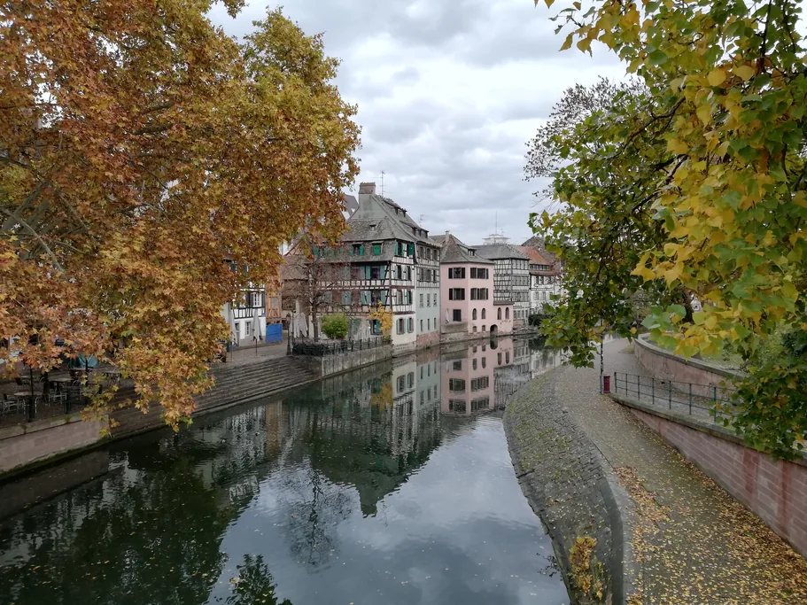
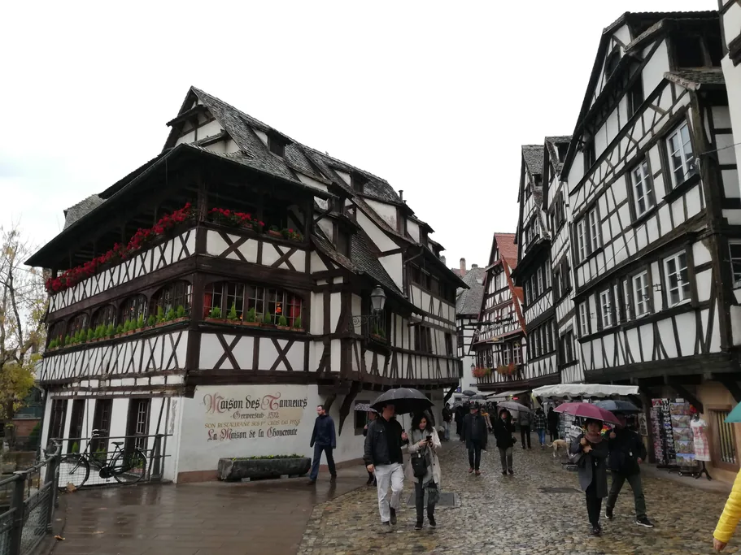

La isla es pequeña: alrededor de un kilómetro de largo, un cuarto de hora a pie de un extremo a otro y ni una sola cuesta. Su historia, en cambio, es larga y enrevesada. Si se fija bien en las casas, empezará a notar cómo se entrelazan en Estrasburgo el pasado francés y el alemán. Las fachadas por sí solas explican poco, y las placas suelen limitarse a un par de fechas. Ahí es donde entra la audioguía de TouringBee por Estrasburgo: 33 paradas, unas dos horas y media a su ritmo.

Audioguía de Estrasburgo por libre Acceso inmediato
Lo esencial de un vistazo
| Lo que conviene saber | |
|---|---|
| Tamaño | Alrededor de 1 km de largo, unos 15 minutos a pie, sin cuestas |
| UNESCO | La Grande Île figura en la lista desde 1988, junto con la Neustadt desde 2017 |
| Referencia | La aguja de la catedral, 142 m, visible desde muchas calles |
| Desde la estación | Unos 10 minutos a pie hasta el extremo oeste de la isla |
| Gratis | Todas las calles, plazas, puentes y paseos junto al agua |
Por qué la Grande Île es una isla de verdad
Aquí hay agua por todos lados. Un brazo del Ill bordea la ciudad por el sur, y el otro, el canal del Faux-Rempart, discurre por el norte, donde antes había un foso. En su punto más estrecho, la isla mide apenas unos cientos de metros de ancho.
Para defenderse, era difícil encontrar un lugar mejor, y los romanos se dieron cuenta enseguida: levantaron aquí un campamento fortificado llamado Argentoratum. Más tarde, la Estrasburgo medieval creció en el mismo lugar, y el río siguió formando parte de las defensas de la ciudad durante mucho tiempo. En la Edad Media, Estrasburgo se convirtió en ciudad libre imperial. En 1681 pasó a manos del rey de Francia, en 1871 quedó integrada en el Imperio alemán y en 1918 volvió a Francia. Y en medio de todo eso, la isla siguió siendo una isla.
En 1988, la UNESCO incluyó todo el centro histórico en la Lista del Patrimonio Mundial como un conjunto, y no edificio por edificio. En 2017, la zona protegida se amplió al otro lado del río, a la Neustadt, el barrio alemán construido después de 1871.

Qué cuentan la arenisca y el entramado
En el viejo Estrasburgo, los edificios de piedra y las casas de entramado de madera conviven codo con codo, y ese es uno de los grandes placeres de recorrer la isla.
La catedral de Estrasburgo no siempre se ve rosa. En un día nublado su piedra parece casi gris, y al sol adquiere un tono cálido y rosado. La explicación está en la arenisca de los Vosgos, que debe su color a compuestos de hierro. Con esta piedra se construyó no solo la catedral, sino también muchos de los edificios más señoriales de la ciudad.
Uno podría pensar que una casa con entramado de madera pertenecía a una familia pobre. En Estrasburgo no es así: el entramado de madera aparece tanto en viviendas modestas como en ricas mansiones de comerciantes. Ahí está la casa Kammerzell, junto a la catedral, que un próspero comerciante mandó reconstruir a finales del siglo XVI. La técnica es ingeniosa: la estructura de madera soporta la carga, las piezas diagonales impiden que se deforme y los huecos se rellenaban casi siempre con barro y paja. Algunas fachadas de entramado se cubrieron con revoque con el paso del tiempo. Más tarde, cuando el entramado empezó a valorarse como parte de la identidad de la ciudad, las vigas de esas casas volvieron a quedar a la vista.
Levante la vista cuando esté junto a una casa de entramado. Los pisos superiores sobresalen por encima de los inferiores, a veces incluso sobre la calle. La explicación habitual son los impuestos: al parecer se calculaban según la superficie de la casa a ras de suelo, así que compensaba ganar espacio en altura. Los historiadores no se ponen de acuerdo sobre cuánto hay de cierto en ello. Lo que sí es seguro es que los pisos en voladizo daban más espacio habitable sin ampliar el solar a pie de calle.
Las historias detrás de las fachadas
33 paradas de la estación a la catedral pasando por la Petite France, a su ritmo y sin conexión.
Cómo orientarse en la isla
La aguja de la catedral se ve desde muchas calles. Solo hay una, porque la segunda torre nunca se construyó, así que no hay forma de confundirla. Si ve la aguja, sabe dónde está el centro.
La segunda referencia es el agua. Si se pierde por las callejuelas, busque el río o el canal: desde casi cualquier punto del casco antiguo, quedan cerca. En muchos tramos, hay paseos junto al agua que llevan fácilmente hasta algún puente conocido.
Gran parte del centro está cerrada al tráfico de coches. Las bicicletas, en cambio, están por todas partes: Estrasburgo es una de las ciudades más ciclistas de Francia. Los ciclistas van rápido y en silencio, así que conviene mirar a ambos lados en los cruces.
Desde la estación de tren hay unos diez minutos a pie hasta el extremo oeste de la isla. Los horarios de los trenes desde París, Fráncfort y Basilea se consultan fácilmente en SNCF Connect. Si quiere alojarse cerca del casco antiguo, compare los alojamientos en Estrasburgo en Booking.com.
Qué hay en cada zona de la isla
La catedral y la plaza Gutenberg
En la parte este de la isla, entre estrechas calles medievales, se alza la catedral. Una de las mejores vistas se tiene desde la rue Mercière, que lleva directamente a la fachada occidental: la aguja se eleva muy por encima de los tejados de alrededor. Detrás de la catedral, en la tranquila place du Château, está la entrada al espectáculo del reloj astronómico, y a pocos pasos hacia el suroeste se abre la plaza Gutenberg. Desde 1840, en su centro se levanta una estatua de bronce de Gutenberg, obra de David d'Angers.
La iglesia de Santo Tomás
Más al sur, cerca del río, está la iglesia de Santo Tomás. Su historia está muy ligada a la Reforma, un capítulo decisivo en la historia de Estrasburgo. En 1524 la iglesia se hizo protestante, y poco después hasta la catedral siguió el mismo camino. En 1681, la catedral volvió al culto católico. Santo Tomás, en cambio, sigue siendo hoy una de las principales iglesias protestantes de Estrasburgo.
La Grand'Rue y la Petite France
La Grand'Rue cruza el casco antiguo hacia el oeste. Parece completamente medieval, pero su historia se remonta mucho más atrás: la calle sigue el trazado de una calzada romana. Hoy, a lo largo de ella, casas de entramado del siglo XVI conviven con edificios de piedra del XVIII. En el extremo oeste de la isla se encuentra la Petite France, el antiguo barrio de los curtidores, donde el Ill se divide en varios brazos. Los Ponts Couverts están justo al lado, y la presa Vauban, un poco más allá.

Las plazas Kléber y Broglie
En el centro y el norte, la isla se abre en amplias plazas. La plaza Kléber es la más grande de la Grande Île, y en diciembre acoge el gran árbol de Navidad de la ciudad. Muy cerca se extiende la alargada plaza Broglie, donde antiguamente se comerciaba con caballos. Está ligada a la historia de «La Marsellesa»: en 1792, Rouget de Lisle compuso en Estrasburgo el que sería el himno nacional de Francia, a petición del alcalde Dietrich, y según la versión tradicional, la canción sonó por primera vez en casa del alcalde, en esta misma plaza.
Puentes y vistas de la isla
En la Edad Media, los pasos sobre el río se vigilaban con tanto celo como las murallas, con puertas, torres y fortificaciones, y una parte de ellas se conserva junto a los Ponts Couverts. El puente del Corbeau, al este, tiene un pasado más sombrío: antiguamente se ejecutaba aquí a los condenados, sumergiéndolos en el río.
La isla se aprecia mejor tomando cierta distancia. Un paseo en barco de Batorama la muestra desde el agua. La ruta principal dura algo más de una hora y pasa junto al casco antiguo, la Neustadt y el barrio europeo. Desde el mirador de la catedral, a 66 metros de altura, se ve cómo el río rodea toda la isla. El acceso al mirador cuesta €10, y las entradas solo se venden allí mismo, el día de la visita. Encontrará paseos en barco y visitas guiadas por Estrasburgo en GetYourGuide.
Más allá de la isla
Muchos visitantes nunca cruzan a la otra orilla, aunque la Neustadt está ahí mismo y recorrerla es una de las mejores cosas gratis que hacer en Estrasburgo. Basta con cruzar el puente hacia el noreste para que las callejuelas den paso a amplias avenidas, el entramado a pesadas fachadas de piedra y las casas bajas a edificios de cinco o seis plantas. Las autoridades alemanas construyeron este barrio después de 1871. En su centro está la plaza de la República, con el Palais du Rhin y el monumento a los caídos: una madre sostiene en su regazo a sus dos hijos, muertos mientras combatían en bandos opuestos.
Estrasburgo con audioguía
La audioguía de TouringBee empieza en el puente Kuss, a cinco minutos de la estación de tren, y termina en la catedral. Empiece cuando quiera y escuche cada grabación al llegar a la parada. Puede interrumpir el recorrido y retomarlo al día siguiente, ya que el acceso dura un año entero.
- 33 paradas, unas 2,5 horas a su ritmo, grabaciones de 1 a 3 minutos.
- Desde €9,99, pago único, un año de acceso, 8 idiomas.
- Descargue el recorrido con antelación y el mapa y las grabaciones funcionarán sin conexión a internet.
- El mapa muestra dónde está, y así es fácil encontrar la siguiente parada.
¿Listo para recorrer Estrasburgo?
El viejo Estrasburgo tiene una cualidad poco común: transmite una sorprendente sensación de unidad, aunque se construyó y se transformó a lo largo de muchos siglos. Quizá se deba a la propia isla. El agua marca sus límites, la aguja de la catedral impide perder de vista el centro y, desde 1988, todo el conjunto está protegido por la UNESCO. Solo diez minutos a pie separan las callejuelas medievales llenas de casas de entramado de las amplias avenidas de la Neustadt, y en esa vecindad se ve con claridad cómo las distintas épocas fueron dando forma a Estrasburgo. Antes de ir tachando monumentos de la lista, tómese su tiempo para pasear por el casco antiguo. De la catedral a la Petite France hay poca distancia, y por el camino hay mucho que ver.
Preguntas frecuentes
¿Qué es la Grande Île?
La isla en la que se encuentra el centro histórico de Estrasburgo. Está rodeada por todos lados por brazos del Ill y un canal, y en ella están la catedral, la Petite France y las principales plazas de la ciudad.
¿Por qué el casco antiguo de Estrasburgo es Patrimonio de la UNESCO?
En 1988 se inscribió todo el centro histórico de la isla como un conjunto. En 2017 se añadió la Neustadt, el barrio alemán de finales del siglo XIX.
¿Por qué las casas de entramado sobresalen sobre la calle?
A menudo se atribuye a impuestos medievales sobre la superficie construida, pero los historiadores no están convencidos. Lo que sí es seguro es que los pisos en voladizo daban más espacio habitable sin ampliar el solar a pie de calle.
¿Es posible perderse en el casco antiguo?
No por mucho tiempo. La aguja de la catedral se ve desde muchas calles, y desde casi cualquier punto del centro el río o el canal, que marcan el borde de la isla, quedan cerca.
¿En qué se diferencia la Grande Île de la Neustadt?
La Grande Île es el centro medieval, con callejuelas, casas de entramado y la catedral. La Neustadt es el barrio alemán situado al noreste, construido después de 1871, con amplias avenidas y monumentales edificios de piedra.
Para seguir leyendo
- Guía de Estrasburgo – lo esencial sobre la ciudad
- Estrasburgo a pie – una ruta circular gratuita por el centro
- La Petite France – el barrio de los curtidores, los Ponts Couverts y una terraza gratuita
- La catedral de Estrasburgo – la fachada, las vidrieras, el reloj y los 330 escalones
- Un día en Estrasburgo – un itinerario hora a hora

Eugene lleva 16 años viviendo en Francia y trabajó de guía antes de fundar la red de contenidos de viaje paris10.travel. Escribió la audioguía de Estrasburgo de TouringBee.
Cada precio y cada horario de esta página está comprobado en la fuente oficial del año en curso. Cuando un dato aún no se ha publicado, lo decimos en lugar de inventarlo.
Las audioguías de TouringBee son nuestro propio producto. Los enlaces a GetYourGuide, Booking.com y SNCF Connect son enlaces de afiliado. Si reserva a través de ellos, podemos recibir una pequeña comisión sin coste adicional para usted. Estas colaboraciones nunca influyen en nuestras recomendaciones.